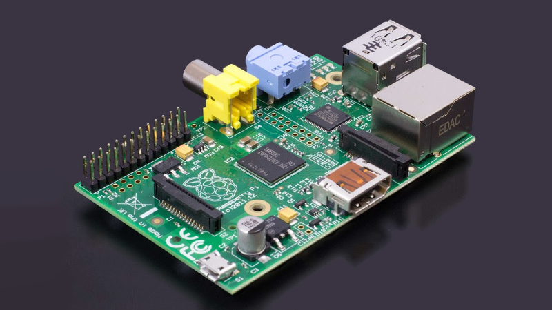

Sobre o Raspberry Pi
O Raspberry Pi é um micro-PC de placa única com um enorme sucesso a nível mundial, com mais de 2 milhões de unidades vendidas.
A versão utilizada no projeto conta com um CPU quad-core ARM Cortex-A7 de 900MHz e 1GB de RAM o que faz com que seja capaz utilizar diferentes distribuições ARM GNU/Linux e até o novo sistema Microsoft Windows 10.
Motivação
Tendo disponiveis 40 pinos GPIO (General Purpose Input Output), é possivel, através dos barramentos existentes no Raspberry Pi (I²C, SPI e UART) criar um sistema é capaz de ler grandezas físicas, tais como temperatura, humidade, corrente e tensão elétrica (AC e DC), distância, caudal de fluido, radiação solar, entre outras, através de diversos sensores, digitais e/ou analógicos (necessita de um conversor A/D.
O projeto
Para ser possivel cumprir todas as funções, de forma simples e organizada, utiliza-se dois sistemas distintos, Cliente e Servidor.
O Cliente, controlado pelo RPI, é responsável por ler os sensores, armazenar os dados e envia-los por GSM para o Servidor, assim como tomar decisões de acordo com condições pré-definidas, através de atuadores (relés, motores, voz e envio de alertas).
O Servidor é responsável por receber os dados lidos pelo cliente, trata-los, analisá-los e de seguida mostrar-los ao utilizador através deste website (na página Dados e Gráficos).